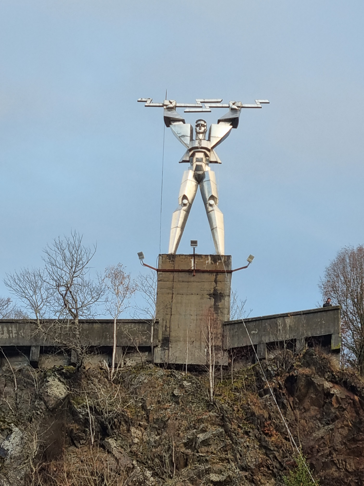
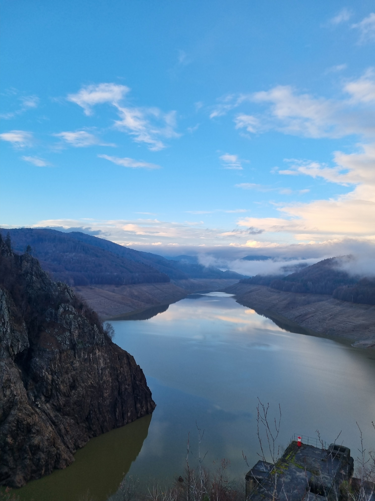
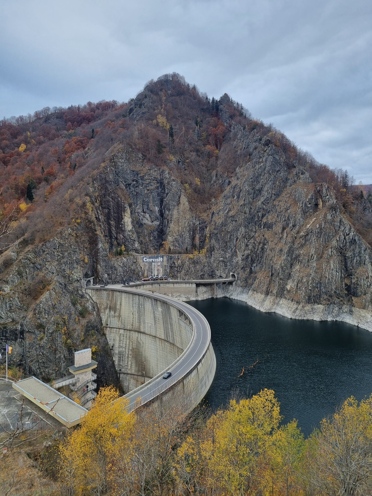
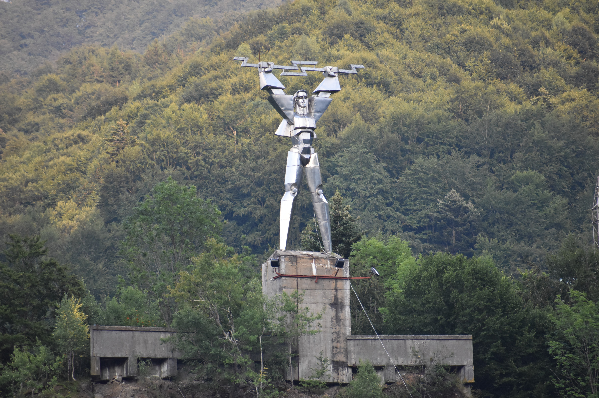

Vidraru · Argeș · România
Salut călătorule — titanul care a adus lumina oamenilor
veghează de peste 50 de ani asupra barajului Vidraru.

Statuia lui Prometeu de la Vidraru are 10 metri înălțime și este realizată din oțel inoxidabil. Platforma pe care este amplasată, la peste 30 de metri înălțime față de coronamentul barajului, este locul perfect de belvedere asupra lacului și barajului Vidraru.
Titanul stă cu brațele ridicate spre cer, purtând flacăra electricității — simbol al energiei pe care hidrocentrala o dăruiește țării de peste jumătate de secol.
Prometeu este titanul ce a furat focul de la zei și l-a dăruit oamenilor pentru a se încălzi și a-și lumina casele. Astfel, cel care aduce focul a devenit simbolul electricității — pentru că din foc iau naștere toate artele și meseriile.
De aceea, atunci când România a finalizat hidrocentrala Vidraru — una dintre cele mai mari realizări inginerești ale țării — nimeni altul decât Prometeu nu putea veghea asupra ei. El este simbol al luminii, al progresului, al îndrăznelii de a transforma natura în energie.
Legenda lui Prometeu este cunoscută de multă lume. Puțin știută este însă povestea statuii lui Prometeu de la Vidraru — locul unde mitul grec s-a întrupat în oțel, pe stâncile Munților Făgăraș.
„Din foc iau naștere toate artele și meseriile, fiind o comoară fără preț."— Eschil, „Prometeu Înlănțuit"

Două baraje. Două continente. Două statui. O singură idee: celebrarea îndrăznelii umane printr-o operă de artă monumentală.
Cel mai mare baraj din lume la momentul construcției, ridicat pe râul Colorado. O capodoperă a ingineriei americane.
Lângă intrarea în baraj sunt amplasate grupul statuar „Siluetele Înaripate" — pentru a celebra această realizare excepțională.
Cel mai mare baraj din România, al optulea ca înălțime în Europa și al douăzecilea în lume la data construcției.
La fel ca la Hoover, și la Vidraru reușita se sărbătorește printr-o statuie. Titanul Prometeu — cel care aduce lumina oamenilor.
Nici în România și nici în America nu mai există, după cunoștințele noastre, alte baraje pentru care să se fi gândit, proiectat și realizat statui sau grupuri statuare pentru a marca această realizare și pentru a deveni obiective turistice. Vidraru și Hoover — singurele baraje din lume cu statui proprii.
O privire asupra locului care te va face să vrei să urci imediat pe acea platformă.
Vidraru prin obiectiv — barajul, statuia și lacul în diferite anotimpuri.


Zona Vidraru este accesibilă din mai multe direcții. Cel mai spectaculos traseu este prin defileul Argeșului pe DN7C.
Barajul Vidraru, DN7C, județul Argeș
45°21'24.1"N · 24°35'54.2"E
Din Pitești: ~65 km pe DN7C
Din București: ~160 km (cca. 2h30)
Din Sibiu (via Transfăgărășan): ~120 km
Acces liber, non-stop, tot anul.
Recomandăm dimineața devreme pentru lumina perfectă și vederi fără aglomerație.
Dacă dorești să afli și despre alte obiective turistice din zonă, te invităm să vizitezi pagina noastră dedicată turismului în Valahia.
Vizitează viavalahia.ro